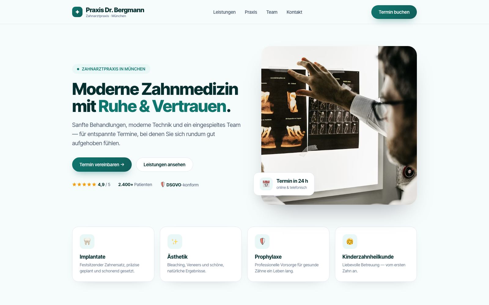
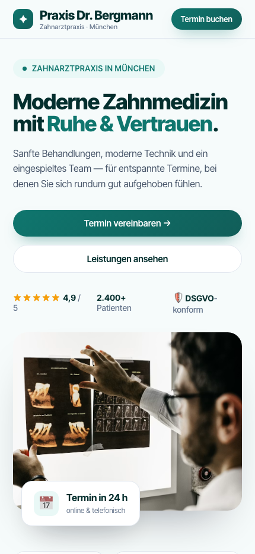

Die Praxis-Website, die zu deiner Zahnarztpraxis passt — und die richtigen Patienten anzieht.
Seitenwerk.de erstellt spezialisierte Websites für Zahnarztpraxen, die ihren Qualitätsanspruch online sichtbar machen und gezielt passende Patienten anziehen wollen — statt einfach nur „mehr Anfragen".


Deine Praxis ist voll — aber deine Website arbeitet nicht wirklich für dich.
Viele Zahnarztpraxen haben kein klassisches „Neupatientenproblem" — und trotzdem bremst die Website im Alltag.
Wenn du dich wiedererkennst, ist deine Website eher ein Risiko für dein Praxis-Image — statt ein professioneller Auftritt.
Kostenloses Erstgespräch sichernSo sollte deine Praxis-Website heute für dich arbeiten
Eine starke Praxis-Website sorgt nicht einfach nur für „mehr Patienten", sondern für Klarheit, Vertrauen und bessere Fälle.
Professionell wirken
Deine Website vermittelt auf den ersten Blick Professionalität, Qualität und Spezialisierung.
Bewusste Entscheidung
Patienten verstehen, wofür deine Praxis steht — und entscheiden sich bewusst für dich.
Team entlasten
Viele Standardfragen sind online geklärt — dein Team wird spürbar entlastet.
Wunschpatienten gewinnen
Du ziehst mehr Patienten an, mit denen du gerne arbeitest — Implantate, Ästhetik, Privatleistungen oder Selbstzahler-Angebote.
Klar abheben in deiner Region
Du hebst dich sichtbar von anderen Praxen in deiner Umgebung ab — durch einen Auftritt, der zu deinem Anspruch passt.
Wie Seitenwerk.de deine Zahnarztpraxis online richtig positioniert
Damit deine Website nicht nur „schön" aussieht, sondern deine Praxis fachlich und menschlich stark präsentiert, arbeiten wir mit einem klaren, strukturierten Ablauf.
Analyse & Positionierung
Im kostenlosen Erstgespräch klären wir, wie deine Praxis wahrgenommen wird, welche Patienten du verstärkt anziehen willst und welche Leistungen im Fokus stehen sollen.
Struktur & Inhalte
Wir entwickeln eine klare Seitenstruktur: starke Hauptseite plus Unterseiten für wichtige Schwerpunkte wie Implantate, Ästhetik oder Prophylaxe.
Design, Texte & Technik
Seitenwerk.de übernimmt modernes, vertrauenswürdiges Design, patientenorientierte Texte und eine technische Umsetzung, die auf allen Geräten funktioniert.
Launch & Feinschliff
Nach dem Go-Live nehmen wir bei Bedarf Anpassungen vor, damit deine Website im Alltag funktioniert: für Patienten, Team und Positionierung.
Was du mit Seitenwerk.de konkret gewinnst
Für welche Praxen ist Seitenwerk.de die richtige Wahl?
Ideal für Zahnarztpraxen in Deutschland, die bereits gut ausgelastet sind oder eine stabile Basis haben — und jetzt ihren Außenauftritt auf das nächste Level bringen wollen.
- deine Praxis klarer positionieren willst, z. B. Implantologie, Ästhetik oder Kinderzahnheilkunde
- bestimmte Leistungen oder Schwerpunkte stärker hervorheben möchtest
- deinen professionellen Anspruch online sichtbar machen willst
Wie eine starke Website Zahnarztpraxen unterstützt
Zahnarztpraxis mit Schwerpunkt Implantologie
Ausgangssituation: Website seit mehreren Jahren unverändert, kaum Struktur — wichtige Leistungen gingen im Gesamtbild unter.
Ziel: Moderner Auftritt, klare Darstellung der Schwerpunkte und Entlastung des Teams bei Standardfragen.
Umsetzung mit Seitenwerk.de: Neue Startseite, Unterseiten für die Hauptleistungen, strukturierte Infos zu Abläufen, Anfahrt und Besonderheiten.
Ergebnis: Deutlich professionellerer Außenauftritt, mehr passende Anfragen für die gewünschten Schwerpunkte und weniger Rückfragen am Telefon.
Erstgespräch sichernWer hinter Seitenwerk.de steht
Seitenwerk.de konzentriert sich auf Websites für Zahnarztpraxen und andere Gesundheitsdienstleister. Statt generische Agentur-Websites zu bauen, liegt der Fokus auf einem klaren Anspruch:
- Deine Website soll deine fachliche Qualität widerspiegeln.
- Deine Website soll Patienten Orientierung geben und Vertrauen schaffen.
- Deine Website soll dir helfen, die richtigen Patienten anzuziehen — nicht einfach nur mehr Anfragen.
Hinter Seitenwerk.de steht Thomas Stübinger, Webdesigner mit Fokus auf erklärungsbedürftige Dienstleistungen und Praxen. Durch diese Spezialisierung weiß ich, welche Informationen Patienten erwarten und wie deine Praxis online so präsentiert wird, dass sie sich von anderen Angeboten abhebt.
Was Praxen vor dem Erstgespräch wissen wollen
Wir haben bereits viele Patienten — lohnt sich eine neue Website überhaupt?
Können wir unsere bestehenden Inhalte weiterverwenden?
Wie lange dauert die Umsetzung?
Müssen wir uns um Technik und Updates kümmern?
Was kostet eine Website von Seitenwerk.de?
Lass deine Website den gleichen Anspruch zeigen wie deine Praxis
Im kostenlosen Erstgespräch schauen wir uns deine aktuelle Website (oder Ausgangssituation) an und klären, ob und wie Seitenwerk.de deiner Praxis konkret helfen kann.
Kostenloses Erstgespräch sichern →